You do not teach a child to think by giving them a textbook of thoughts. You give them problems and let them struggle.
Chinchilla, Tough Love AI Agent
How do you train a model to reason? Standard supervised fine-tuning teaches a model to imitate human-written answers. But reasoning models need something more: they need to discover effective reasoning strategies, not just copy existing ones. The solution is reinforcement learning with verifiable rewards (RLVR), where the model is rewarded for getting the right answer regardless of how it reasons. This section covers the training algorithms (GRPO, PPO), the reward models (PRM, ORM) that guide training, and the bootstrapping approaches (STaR) that generate training data. These methods connect directly to the RLHF framework in Chapter 18, extending alignment techniques to the reasoning domain. For the complementary topic of generating synthetic reasoning data (rejection sampling pipelines, distillation traces, and quality filtering), see Section 15.6: Synthetic Reasoning Data.
Prerequisites
This section assumes familiarity with the reasoning model architectures from Section 8.2 and reinforcement learning fundamentals (policy, reward, optimization) from Section 0.5. Synthetic-data generation and preference learning frameworks (covered later in the book) provide additional context for the bootstrapping approaches discussed here.
8.3.1 Reinforcement Learning with Verifiable Rewards (RLVR)
The reasoning-model training pipeline (RLVR with verifier rewards) is treated from the alignment angle in Section 18.6: RLVR, and from the failure-mode angle in the W6 callout above.
At math camp, students do not just memorize formulas; they get graded on every intermediate step, with the right answer earning bonus points and a wrong step earning a careful explanation. RLVR, GRPO, and PRM are the modern equivalent: the model is shown thousands of math problems, every step is graded, and the gradient pushes the model toward strategies that consistently get to the right answer. The camp is brutal, but the alumni can prove theorems.
RLVR (Reinforcement Learning with Verifiable Rewards) replaces a learned reward model with a deterministic verifier (unit tests, formal proofs, math-grader). This removes the classic reward-model exploitation failures of RLHF but introduces new ones: (1) verifier surface attack, where the model finds outputs that pass the verifier without solving the intended problem; (2) format overfitting, where reasoning becomes a templated dance optimized for the verifier's parser; (3) spec gaming on edge cases the verifier author did not enumerate. The DeepSeek-R1 cold-start trick (rejection-sampling SFT before RLVR) suppresses (2) but not (1) or (3). An empirical taxonomy of RLVR failure modes is still a 2026-27 open project.
GRPO and similar RLVR methods have no formal convergence guarantee for general policies. The most pressing degenerate case: when all G samples in a group share the same reward (all correct or all wrong), the advantage is exactly zero for every token, producing a zero gradient. Problems that are too easy or too hard provide no training signal. This zero-variance problem is acknowledged in the DeepSeek-R1 technical report but rarely formalized. Curriculum scheduling (start with problems where some samples succeed and others fail) is the current pragmatic workaround. How to maintain gradient signal throughout training via curriculum, reward shaping, or problem-difficulty scheduling is an active research problem (Dong et al., 2024; Shao et al., 2024).
GRPO's within-group normalization is not merely a computational trick; it is a Monte Carlo approximation of the value function that PPO's critic would compute. The PPO critic estimates V(s) = E[r|s] for any state. GRPO estimates the same quantity empirically: sample G completions, take their mean reward. The advantage Aᵢ = (rᵢ - r̄)/σ measures how much better solution i is than average. The practical implication: variance is controlled by G, the group size. Larger G = more accurate value estimate (and more stable training) at G× more inference cost per training step. The failure mode is reward homogeneity: if all G samples receive the same reward (all correct or all wrong), the standard deviation is zero, the advantage is undefined, training produces no update. This "dead zone" is why RLVR training stalls on problems that are simultaneously too easy and too hard.
The standard RLHF pipeline (covered in Section 18.1) trains models using human preference data: annotators compare two model outputs and the model learns to produce outputs that humans prefer. This works well for alignment (making models helpful and harmless) but has a fundamental limitation for reasoning: human annotators cannot easily verify whether a 10,000-token mathematical proof is correct.
Reinforcement Learning with Verifiable Rewards (RLVR) sidesteps this problem entirely. Instead of relying on human judgments, RLVR uses tasks where correctness can be verified automatically:
- Mathematics: Compare the model's final numerical answer against the ground truth. The answer is either correct or incorrect, with no ambiguity.
- Code generation: Execute the model's code against a test suite. It either passes all tests or it does not.
- Formal proofs: Check the proof in a formal verification system (Lean, Coq). The proof either compiles or it does not.
- Constraint satisfaction: Verify that the output meets explicit constraints (e.g., "use exactly 100 words" or "include all specified keywords").
The key insight is that verifiable tasks provide a free, scalable, perfectly accurate reward signal. There is no need for human annotators, no inter-annotator disagreement, and no label noise. This allows RL training at a scale that would be impractical with human feedback.
Formally, RLVR optimizes the same expected-reward objective as standard RL, but with a deterministic verifier $V$ in place of a learned reward model. A KL anchor to the reference policy $\pi_{\text{ref}}$ (the supervised checkpoint) prevents the policy from drifting into reward-hacking strategies:
Here $q$ is a problem, $s$ is a sampled solution (reasoning trace plus final answer), $V(s, q) \in \{0, 1\}$ is the verifier's verdict, and $\beta$ controls how far the policy may stray from the reference (typical values 0.01 to 0.05). The gradient is taken on this objective via PPO or GRPO. The contrast with RLHF is sharp: RLHF replaces $V$ with a learned reward model $r_{\phi}$ that must itself be trained on human preference labels and can be exploited by the policy.
The end-to-end loop is a tight cycle of sampling, verifying, and updating, with the verifier providing the only learning signal, as sketched in Figure 8.3.1a.
from transformers import AutoModelForCausalLM, AutoTokenizer
from trl import GRPOConfig, GRPOTrainer
import torch, re
# Minimal RLVR loop with TRL's GRPOTrainer.
# Verifier is a Python function: no human labels, no learned reward model.
MODEL = "Qwen/Qwen2.5-Math-7B"
tok = AutoTokenizer.from_pretrained(MODEL)
policy = AutoModelForCausalLM.from_pretrained(
MODEL, torch_dtype=torch.bfloat16, device_map="auto"
)
def math_verifier(solution: str, gold: str) -> float:
"""Extract the final answer after 'ANSWER:' and compare to the gold value."""
m = re.search(r"ANSWER:\s*([\-\d\./]+)", solution)
if not m:
return 0.0
try:
return 1.0 if abs(float(m.group(1)) - float(gold)) < 1e-6 else 0.0
except ValueError:
return 0.0
# Each example in gsm8k_train is {"prompt": ..., "gold": ...}.
# GRPOTrainer samples G completions per problem, scores them with math_verifier,
# normalizes rewards within the group, and runs a PPO-style clipped update.
# No critic model is required, which halves the GPU memory vs. PPO.
trainer = GRPOTrainer(
model=policy,
args=GRPOConfig(
num_generations=8, # G samples per problem
learning_rate=5e-6,
beta=0.04, # KL weight against pi_ref
max_prompt_length=512,
max_completion_length=1024,
),
train_dataset=gsm8k_train,
reward_funcs=[lambda c, gold: math_verifier(c, gold)],
)
trainer.train()Code Fragment 8.3.0: A minimal RLVR training loop using Hugging Face TRL's GRPOTrainer. The verifier is just a Python function: extract the answer after ANSWER: and compare to the gold value. No human annotators, no reward model, no preference dataset; scaling is limited only by how fast the verifier runs and how many problems with known answers are available.
"Verifiable" does not mean "unhackable." First-time readers see "the answer either matches the ground truth or it doesn't" and assume RLVR has solved reward hacking. The model can still hack the verifier interface: outputting answers in a non-standard format the parser misreads as correct, generating extra-long traces that exhaust verifier timeouts, or finding edge cases the test suite did not enumerate. RLVR moves the attack surface from "exploit a learned reward model" to "exploit the verifier parser." The advantage is that the new attacks are usually easier to spot and patch (you fix a regex), but the failure mode has not disappeared.
RLVR inverts the traditional supervised learning paradigm. In supervised fine-tuning, you show the model how to reason (by providing example reasoning traces). In RLVR, you only tell the model what the right answer is and let it discover its own reasoning strategies. This is why R1-Zero could develop chain-of-thought reasoning without ever seeing a chain-of-thought example: the RL reward signal only checked the final answer, and the model independently discovered that step-by-step reasoning was the most reliable way to arrive at correct answers.
8.3.1.1 The RLVR Training Loop
Algorithm 1 formalizes the RLVR training loop. The critical difference from standard RLHF is step 3: rewards come from automatic verification rather than a learned reward model.
Input: policy model pi, problem dataset D, verifier V, num_iterations T
Output: trained policy pi*
1. for iteration = 1 to T:
a. Sample a batch of problems {p_1, ..., p_B} from D
b. for each problem p_i:
Generate solution s_i (reasoning trace + final answer) using pi
c. for each solution s_i:
r_i = V(s_i, ground_truth_i) // automatic verification
// e.g., r_i = 1 if answer matches, 0 otherwise
d. Optionally add format rewards (e.g., +0.1 for using <think> tags)
e. Update pi using policy optimizer (PPO or GRPO) to maximize
expected reward while staying close to reference policy
2. return pi* (the final policy)
Input: problem p, policy pi, reference policy pi_ref, group size G, KL weight beta
Output: policy gradient update for pi
1. Generate G solutions {s_1, ..., s_G} from pi for problem p
2. Compute rewards: r_i = verify(s_i) for i = 1 to G
3. Normalize rewards within the group:
A_i = (r_i - mean(r_1..r_G)) / std(r_1..r_G)
4. for each solution s_i with advantage A_i:
a. Compute ratio: rho_i = pi(s_i|p) / pi_old(s_i|p)
b. Clip ratio: rho_clipped = clip(rho_i, 1-eps, 1+eps)
c. L_i = min(rho_i * A_i, rho_clipped * A_i)
5. Add KL penalty: L_total = mean(L_i) - beta * KL(pi || pi_ref)
6. Update pi by gradient ascent on L_totalThe power of RLVR lies in the verifier: because correctness checking is automatic, the system can generate millions of training signals without human annotators. This enables RL training at a scale that would be impractical with human feedback.
With a scalable reward signal in hand, the next question is: which RL algorithm should drive the optimization? Standard PPO requires a separate critic model that doubles GPU memory. DeepSeek developed a more efficient alternative specifically for training reasoning models.
8.3.2 Group Relative Policy Optimization (GRPO)
"Verifiable" rewards are not "unfakeable." Wen et al. (2024) documented that models trained with RLVR learn to exploit format parsers, outputting answers in non-standard formats that the verifier incorrectly counts as correct. "ThinkBot" and related 2025 work showed models learning to produce excessively long thinking traces that exhaust verifier timeouts, getting credit for "no clear wrong answer." These failure modes are qualitatively different from RLHF reward hacking because the verifier is assumed perfect. Designing truly robust verifiers for open-ended domains (especially when the verifier is itself an LLM judge with its own biases) remains unsolved. The lesson: a strong reward signal is necessary but not sufficient.
GRPO is the RL algorithm developed by DeepSeek for training R1. Its primary advantage over PPO (the algorithm used in standard RLHF) is that it does not require a separate critic (value) model, which halves the GPU memory requirement during training.
8.3.2.1 How GRPO Works
In standard PPO, a critic model estimates the expected reward for each state (partial generation), and the advantage function is computed as the difference between the actual reward and the critic's estimate. Training the critic model requires additional GPU memory and compute roughly equal to training the policy model itself.
GRPO eliminates the critic by computing advantages relative to a group of samples. Algorithm 2 formalizes the procedure for a single problem within the training loop.
The key insight is in step 3: by normalizing rewards within each group, GRPO converts absolute rewards into relative comparisons. A solution that scores 1.0 in a group where all others also score 1.0 receives zero advantage (nothing to learn from), while the same score in a group of mostly failures receives high positive advantage. This eliminates the need for a separate critic model to estimate expected reward, halving the GPU memory requirement.
Figure 8.3.2 shows this loop end to end: one problem fans out into a group of sampled solutions, the verifier scores each automatically, and subtracting the group mean (then dividing by the standard deviation) turns those raw scores into the advantages that push the policy toward above-average attempts and away from below-average ones.
8.3.2.2 GRPO vs. PPO
| Property | PPO | GRPO |
|---|---|---|
| Critic model required? | Yes (same size as policy) | No |
| GPU memory | ~2x policy model size | ~1x policy model size + samples |
| Advantage estimation | Critic-based (GAE) | Group-relative normalization |
| Samples per problem | 1 to 4 (typical) | 8 to 64 (required for good statistics) |
| Bias | Critic model introduces bias | Group mean is unbiased estimator |
| Variance | Lower (critic smooths estimates) | Higher (depends on group size) |
| Training stability | Moderate (critic training can lag) | Good with sufficient group size |
The key trade-off visible in this table is memory versus samples: PPO needs a large critic model but few samples per problem, while GRPO eliminates the critic at the cost of generating many more samples. For models at the scale of DeepSeek V3 (671B parameters), the memory savings from eliminating the critic model are decisive.
Why group normalization works intuitively. Consider grading on a curve: if a professor does not know how hard an exam was, they can still assign fair grades by comparing students to each other. GRPO does the same thing. It does not need to predict how hard a problem is (which the critic model attempts); it simply observes how the current policy performs on each problem across multiple attempts and rewards the above-average attempts. This is why GRPO needs more samples: with only two "students," the curve is meaningless. With 16 or more, the relative rankings become informative. The same principle applies when you are building reward-based fine-tuning pipelines: relative comparisons are often more robust than absolute scores.
GRPO is a direct descendant of the PPO-based RLHF pipeline described in Section 18.1. The key difference is the source of rewards: RLHF uses a learned reward model trained on human preferences, while RLVR uses automatic verification. The policy optimization math is similar, but the elimination of both the critic model and the human-trained reward model makes RLVR with GRPO substantially simpler and cheaper to implement.
8.3.3 Process Reward Models vs. Outcome Reward Models
Reward models play a central role in both training and deploying reasoning models. They serve two purposes: (1) providing reward signals during RL training, and (2) scoring candidate solutions during inference (best-of-N selection, tree search). There are two fundamental types:
8.3.3.1 Outcome Reward Models (ORM)
An ORM evaluates the complete solution and produces a single score. It answers the question: "How likely is this solution to be correct?" ORMs are trained on (problem, solution, correctness_label) triples, where the correctness label is a binary indicator of whether the solution produced the right final answer.
Advantages of ORMs:
- Easy to train (binary classification on complete solutions)
- Easy to label (just check if the final answer is correct)
- No need for step-level annotations
Limitations of ORMs:
- Cannot distinguish "right answer, wrong reasoning" from "right answer, right reasoning." A solution that arrives at the correct answer through a lucky error is scored the same as a logically sound derivation.
- Cannot provide feedback on where a wrong solution went astray. The ORM only says "wrong" without indicating which step caused the failure.
- Less effective for guiding tree search, since it can only score complete solutions, not partial reasoning paths.
8.3.3.2 Process Reward Models (PRM)
A PRM evaluates each reasoning step individually, producing a score for every step in the chain. It answers the question: "Is this step logically valid given the previous steps?" PRMs are trained on step-level annotations where human annotators (or automated systems) label each reasoning step as correct or incorrect.
Formally, given a reasoning trace decomposed into $T$ steps $y = (y_1, \dots, y_T)$ with step embeddings $h_t$, a PRM produces per-step probabilities $p_t = \sigma(w^\top h_t + b) \in [0, 1]$. Two common aggregation choices for selecting one of $N$ best-of-$N$ candidates are the minimum-step score (penalises any weak step) and the product score (rewards uniformly strong chains):
The $\min$ aggregation matches the empirical observation that one bad step usually ruins the final answer, while the $\prod$ aggregation is the maximum-likelihood choice when the per-step labels are conditionally independent. Lightman et al. (2023) report that $\min$ outperforms $\prod$ by 1 to 2 points on MATH best-of-N selection.
The landmark dataset for PRM training is PRM800K (Lightman et al., 2023), which contains 800,000 step-level annotations of mathematical reasoning solutions. Each step is labeled as "positive" (correct), "negative" (incorrect), or "neutral" (valid but not helpful). Math-Shepherd (Wang et al., 2024) later provided an automated alternative to human annotation, using outcome verification to automatically label steps.
PRMs solve roughly 9 percentage points more problems than ORMs (Lightman et al., 2023) when used for best-of-N selection with the same compute budget (Lightman et al., 2023). The advantage comes from PRMs' ability to distinguish solutions where every step is logically sound from solutions that happen to reach the right answer through faulty reasoning. For tree search, the advantage is even larger, because PRMs can evaluate partial solutions at each branch point.
To make the PRM concept concrete, the following code fragment shows a simplified implementation that scores each reasoning step using a linear classifier on top of a pretrained language model backbone.
# Simplified PRM scoring of reasoning steps
import torch
import torch.nn as nn
class ProcessRewardModel(nn.Module):
"""
A simplified Process Reward Model that scores each
reasoning step in a chain-of-thought solution.
In practice, PRMs are typically built by adding a
classification head on top of a pretrained language model.
"""
def __init__(self, base_model, hidden_size=4096):
super().__init__()
self.base_model = base_model # Pretrained LM backbone
self.step_scorer = nn.Linear(hidden_size, 1) # Step-level score
def forward(self, input_ids, step_boundaries):
"""
Args:
input_ids: Tokenized [problem + solution] sequence
step_boundaries: List of token positions where each
reasoning step ends (e.g., at newlines)
Returns:
step_scores: Score for each reasoning step (0 to 1)
"""
# Get hidden states from base model
hidden_states = self.base_model(
input_ids, output_hidden_states=True
).last_hidden_state # [1, seq_len, hidden_size]
# Extract hidden state at each step boundary
step_scores = []
for boundary_pos in step_boundaries:
step_hidden = hidden_states[0, boundary_pos, :]
score = torch.sigmoid(self.step_scorer(step_hidden))
step_scores.append(score.item())
return step_scores
# Example usage (pseudocode)
def score_solution_with_prm(prm, tokenizer, problem, solution_text):
"""Score each step in a reasoning solution."""
full_text = f"Problem: {problem}\nSolution:\n{solution_text}"
tokens = tokenizer(full_text, return_tensors="pt")
# Identify step boundaries (e.g., at newline characters)
step_boundaries = [
i for i, tok in enumerate(tokens.input_ids[0])
if tokenizer.decode([tok]) == "\n"
]
step_scores = prm(tokens.input_ids, step_boundaries)
# Print step-level scores
steps = solution_text.split("\n")
for i, (step, score) in enumerate(zip(steps, step_scores)):
status = "PASS" if score > 0.5 else "FAIL"
print(f" Step {i+1} [{status}] (score={score:.3f}): {step[:60]}...")
# Overall solution score: product of step scores
# (all steps must be correct for the solution to be correct)
overall_score = 1.0
for s in step_scores:
overall_score *= s
return overall_score, step_scores
# Example output:
# Step 1 [PASS] (score=0.97): Let x be the number of apples. We know...
# Step 2 [PASS] (score=0.94): Setting up the equation: 3x + 7 = 22...
# Step 3 [FAIL] (score=0.12): Dividing both sides by 3: x = 22/3 = 7...
# Step 4 [PASS] (score=0.89): Therefore, there are 7 apples.
# Overall score: 0.097
# Note: Step 3 is flagged as incorrect (should be (22-7)/3 = 5)8.3.3.3 PRM Training Methods
There are three main approaches to training PRMs:
- Human annotation (PRM800K): Human annotators read each reasoning step and label it as correct, incorrect, or neutral. This produces high-quality labels but is expensive and slow. Lightman et al. (2023) employed mathematics graduate students for annotation, at a cost of roughly $12 per fully-annotated solution.
- Automated step verification (Math-Shepherd): Wang et al. (2024) proposed automatically labeling steps by checking whether completing the solution from each step leads to the correct final answer. If completing from step $k$ yields the correct answer with high probability (across many completions), step $k$ is labeled as correct. If completions from step $k$ almost never reach the correct answer, step $k$ is labeled as incorrect.
- Monte Carlo estimation: Similar to Math-Shepherd but using rollout statistics from MCTS. Each step's value is estimated by the fraction of rollouts from that step that eventually reach a correct solution.
8.3.4 STaR and Bootstrapping Approaches
Self-Taught Reasoner (STaR), proposed by Zelikman et al. (2022), is an iterative bootstrapping method that was an important precursor to modern RL-based reasoning training. The core idea is simple: use the model's own correct reasoning traces as training data for the next iteration.
8.3.4.1 The STaR Algorithm
- Generate: For each problem in the training set, generate a reasoning trace and answer using the current model.
- Filter: Keep only the traces that produced the correct final answer.
- Rationalize: For problems where the model failed, provide the correct answer as a hint and ask the model to generate a reasoning trace that arrives at that answer. This "rationalization" step generates correct traces for problems the model could not solve unaided.
- Train: Fine-tune the model on the combined set of correct traces (from step 2) and rationalized traces (from step 3).
- Repeat: Use the improved model as the starting point for the next iteration.
Each iteration produces a model that can solve more problems correctly, which in turn generates more training data for the next iteration. This creates a positive feedback loop where the model gradually bootstraps its way to stronger reasoning.

Why bootstrapping converges instead of amplifying errors. The key safeguard is the filter in step 2: only traces that produce verifiably correct answers are kept. This means errors cannot propagate across iterations because they are removed before training. The rationalization step (step 3) is what prevents the model from plateauing: by giving the model the answer as a hint, you let it practice reasoning about problems just beyond its current ability, similar to how a student learns more from working a problem with the answer key than from skipping it entirely. This same principle underlies the rejection sampling pipelines used in practical synthetic data generation.
STaR and RLVR share the same core principle: using the correctness of the final answer as the training signal. The difference is in the optimization method. STaR uses supervised fine-tuning on filtered correct traces (a form of rejection sampling). RLVR uses policy gradient optimization (PPO or GRPO) to directly maximize expected reward. In practice, RLVR has proven more effective at scale, likely because policy gradient methods can more efficiently explore the space of reasoning strategies. STaR's contribution was demonstrating that the bootstrapping principle works at all.
8.3.4.2 Quiet-STaR
Quiet-STaR (Zelikman et al., 2024) extends the STaR idea by training the model to generate internal "thoughts" at every token position, not just in response to explicit reasoning prompts. The model learns to insert hidden reasoning before generating each token, essentially making chain-of-thought a continuous, always-on process rather than something triggered by a specific prompt. This is conceptually closer to how reasoning models like o1 operate, where thinking is built into the generation process rather than being prompt-elicited.
8.3.5 Synthetic Reasoning Data Generation
Both the RL-based approaches (GRPO, PPO) and the bootstrapping methods (STaR) share a common dependency: they need large quantities of problems with verifiable answers. Training reasoning models requires large quantities of problems with verifiable answers. While math competition archives and code challenge repositories provide some data, the demand far exceeds the supply of naturally occurring verifiable problems. This creates a need for synthetic data generation (building on the techniques in Chapter 15).
8.3.5.1 Problem Synthesis Strategies
- Template-based generation: Create parameterized problem templates and fill in different values. For example, "If a train travels at {speed} km/h for {time} hours, how far does it go?" This is simple but produces limited diversity.
- LLM-generated problems: Use a strong model to generate novel math/code problems, then verify the ground truth answers automatically. This produces more diverse problems but requires careful filtering for solvability and difficulty.
- Evol-Instruct for reasoning: Adapt the Evol-Instruct methodology (see Section 15.2) to progressively increase problem difficulty: take an existing problem and ask a model to make it harder by adding constraints, increasing the number of steps, or combining multiple concepts.
- Backward generation: Start with an answer and generate a problem that has that answer. This guarantees a verifiable ground truth and can produce creative, non-standard problems.
8.3.5.2 Quality Filtering
Not all synthetically generated problems are useful for training. Common quality filters include:
- Solvability check: Verify that the problem has a unique, correct answer by solving it with multiple models and checking for agreement.
- Difficulty calibration: Estimate problem difficulty by measuring what fraction of a baseline model's attempts produce the correct answer. Problems that are too easy (>95% accuracy) or too hard (<1% accuracy) provide limited training signal.
- Deduplication: Remove problems that are semantically similar to existing training examples, to maintain diversity.
- RLVR uses automatically verifiable tasks (math, code) to provide free, scalable reward signals for training reasoning models, eliminating the need for human annotators.
- GRPO eliminates the critic model required by PPO, halving GPU memory requirements at the cost of needing more samples per problem for accurate advantage estimation.
- Process Reward Models (PRMs) score individual reasoning steps and outperform Outcome Reward Models (ORMs) by ~15% on best-of-N selection, because they can distinguish sound reasoning from lucky guesses.
- STaR demonstrated that models can bootstrap reasoning ability by iteratively training on their own correct solutions, a precursor to the RL-based approaches used in modern reasoning models.
- Synthetic data generation is essential for scaling reasoning training beyond the limited supply of naturally occurring verifiable problems.
When using chain-of-thought in production, do not just check the final answer. Parse intermediate steps and validate them where possible (for example, re-execute any arithmetic). This catches plausible-sounding but wrong reasoning before it reaches users.
Show Answer
GRPO computes advantages by normalizing rewards within a group of samples for the same problem. The group mean and standard deviation serve as the baseline (replacing the critic model in PPO). With too few samples, these statistics are noisy:
- With G=2, the "mean" is just the average of two samples. If both happen to be correct (or both incorrect), the advantage estimates are meaningless (all zeros after normalization).
- With G=8, the statistics are more reliable. If 3 out of 8 are correct, the correct solutions get positive advantages and incorrect ones get negative advantages.
- With G=64, the statistics are very accurate, but you are generating 64 solutions per problem, which is expensive.
The trade-off: larger G gives more accurate advantage estimates (lower variance in gradient updates) but costs more compute per training step. PPO avoids this by using a critic model to estimate the baseline, so it needs fewer samples. But the critic itself costs memory and compute, and it introduces bias if the critic is inaccurate. In practice, G=16 to 32 is a common sweet spot for GRPO, providing reasonably accurate advantage estimates without excessive per-step cost.
Show Answer
Strengths of the DPO approach (for the full DPO derivation see Section 18.3):
- Simpler implementation. DPO requires no reward model and no online generation during training. You generate a dataset of (problem, correct_solution, incorrect_solution) triples once, then train offline.
- More memory-efficient. DPO trains a single model with a reference model, similar to SFT. No need for multiple samples per problem during training.
- Well-tested infrastructure. DPO has been widely adopted and many implementations exist.
Weaknesses:
- DPO is an offline method: it learns from a fixed dataset of preference pairs. As the model improves during training, the preference pairs (generated by the initial model) become less informative. GRPO generates fresh samples from the current policy at each iteration, keeping the training data on-policy.
- Binary preference pairs lose information. If you have 8 solutions and 3 are correct, GRPO uses all 8 to compute advantages. DPO would create pairs from the 3 correct vs. 5 incorrect, discarding the relative quality differences among the 3 correct solutions.
- DPO cannot discover new reasoning strategies beyond what is in the initial generation. GRPO's online sampling allows the model to explore novel reasoning paths during training.
In practice, some researchers have used DPO successfully for reasoning training (e.g., in the Kimi k1.5 pipeline), but it is typically used in combination with RL rather than as a replacement.
Show Answer
Failure mode 1: Correct step, incorrect continuation. A step might be mathematically correct, but the completion model might fail to solve the remaining steps. Math-Shepherd would label this correct step as "incorrect" because completions from it fail. This is especially likely for hard intermediate steps where the remaining problem is still difficult.
Mitigation: Use a large number of completions (N=100+) per step and set a lenient threshold. If even 5% of completions from step k reach the correct answer, label step k as correct. The key insight is that a correct step should lead to at least some correct completions, while a genuinely wrong step should lead to almost zero.
Failure mode 2: Lucky error compensation. A step might contain an error, but the completion model might make a compensating error later that produces the correct final answer. Math-Shepherd would label this incorrect step as "correct" because completions succeed. This is more likely in problems where multiple error paths can coincidentally lead to the right numerical answer.
Mitigation: Instead of binary labeling, use the completion success rate as a soft label. A step where 90% of completions succeed is likely correct; a step where 10% succeed might have a subtle error. Additionally, cross-validate by checking whether the step is consistent with multiple different correct solution paths (not just whether it leads to the right numerical answer).
Training reasoning models is one of the most active areas in LLM research. DeepSeek's GRPO algorithm (2025) showed that critic-free RL can produce world-class reasoning, and several groups are extending this approach with improved reward signals. Generative Reward Models (GenRM), proposed by Zhang et al. (2025), use a language model to generate verification chains rather than outputting a single scalar score, improving reward accuracy on multi-step problems. The OpenR framework (Wang et al., 2024) provides an open-source platform for reproducing reasoning model training with both PRM and ORM reward signals. Meanwhile, research on scaling synthetic data for reasoning training is accelerating: NuminaMath (Li et al., 2024) curated 860K competition-grade math problems with verified solutions, directly addressing the data bottleneck for RLVR training.
Exercises
LLMs make arithmetic errors even with chain-of-thought. How does tool use (e.g., calling a calculator or code interpreter) address this limitation? Give two examples of tools that complement LLM reasoning.
Answer Sketch
Tool use offloads tasks the LLM is unreliable at to specialized systems that are guaranteed correct. Calculator: the LLM sets up the computation correctly (its strength) and delegates the arithmetic (its weakness) to a calculator. Code interpreter: the LLM writes Python code to solve the problem, then executes it, getting exact results for numerical computations, data manipulation, and logical operations. Other examples: web search for factual verification, database queries for data retrieval, and symbolic math solvers for algebraic manipulation.
Take a complex word problem and solve it two ways: (1) using chain-of-thought natural language reasoning, and (2) by asking the LLM to write and execute Python code. Compare accuracy on 10 problems. Which approach is more reliable?
Answer Sketch
Code-based reasoning is typically more reliable for quantitative problems because: (1) Python performs exact arithmetic, eliminating calculation errors. (2) Variables make it easy to track intermediate values. (3) The code can be executed and verified. For 10 multi-step math problems, expect code-based accuracy of 80 to 90% vs. 50 to 70% for natural language CoT. However, natural language CoT is better for conceptual reasoning that does not involve computation (ethics, interpretation, creative thinking).
Some reasoning frameworks include a self-reflection step where the model critiques its own output. Under what conditions does self-reflection reliably improve output quality, and when does it fail or even make things worse?
Answer Sketch
Self-reflection works when: (1) the task has objectively verifiable answers (math, code with tests). (2) The errors are surface-level (typos, calculation mistakes) rather than deep conceptual misunderstandings. (3) The model is asked to check specific aspects (e.g., 'verify each arithmetic step'). Self-reflection fails when: (1) the model's confidence is well-calibrated but wrong (it doubles down on incorrect reasoning). (2) The error requires knowledge the model lacks. (3) Sycophantic behavior causes the model to agree with the user's wrong suggestion. Research shows that without external feedback (tool output, test results), self-reflection improves results only marginally and sometimes degrades them.
Compare model performance on GSM8K (grade-school math), MATH (competition math), and ARC-Challenge (science reasoning). Why do models that ace GSM8K often struggle on MATH? What does this tell us about reasoning difficulty?
Answer Sketch
GSM8K requires basic arithmetic and 2 to 5 reasoning steps using everyday concepts. MATH requires advanced mathematical concepts (algebra, geometry, number theory), creative problem-solving, and 5 to 15 steps. Models ace GSM8K (>95% with CoT) but struggle on MATH (~50 to 70%) because MATH requires: (1) domain knowledge (mathematical concepts). (2) Longer reasoning chains with more opportunities for error accumulation. (3) Creative insight rather than formulaic approaches. This tells us that 'reasoning' is not a single skill: simple multi-step reasoning saturates quickly with scale, while complex reasoning requiring domain knowledge and creativity remains challenging.
Create a small evaluation suite of 20 reasoning problems across four categories: arithmetic (5), logical deduction (5), spatial reasoning (5), and common sense (5). Test an LLM with and without CoT, and compute accuracy per category. Which category benefits most from CoT?
Answer Sketch
Expected results: arithmetic benefits most from CoT (30+ point improvement) because step-by-step computation prevents error accumulation. Logical deduction also benefits significantly (20+ points) as explicit tracking of premises helps. Spatial reasoning shows modest improvement (5 to 15 points) because verbal descriptions of spatial relationships are inherently limited. Common sense shows the least improvement (0 to 10 points) because common sense reasoning is often intuitive rather than step-by-step. This exercise demonstrates that CoT is not universally helpful and its benefit varies by reasoning type.
What Comes Next
Now that we understand how reasoning models are trained, Section 8.4 covers the practical side: how to prompt reasoning models effectively, control reasoning budgets, and avoid common pitfalls.